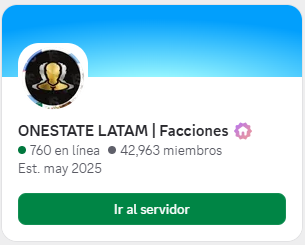
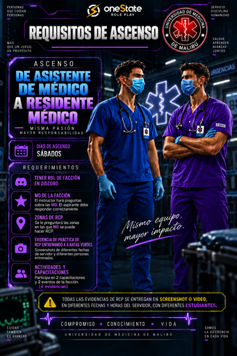

02
🎓 Eventos y capacitaciones
Participar en 2 capacitaciones y 2 eventos de la facción (4 evidencias). Se debe ver que estás presente y la actividad.
Mismo equipo · Mayor impacto
🔽 Seguí deslizando

Tener el rol de la facción asignado en el Discord oficial.
🔽 Deslizá para ver más
Participar en 2 capacitaciones y 2 eventos de la facción (4 evidencias). Se debe ver que estás presente y la actividad.

Presentar evidencia con seis alumnos distintos en diferentes días.
🔍 Ingresá para ver un ejemplo

El instructor hará preguntas sobre las MD. El aspirante debe responder correctamente.

Ingresá al mapa para descubrir si podés hacer RCP en cada punto de la ciudad.

Resumen de los requisitos para bata morada.
Para ascender a Residente médico (bata morada) es obligatorio tener asignado el rol de la facción de Medicina en el Discord oficial. Si todavía no lo tenés, seguí estos pasos:
SOLICITUD DE ROL NOMBRE: RANGO: FACCIÓN: MEDICINA SERVIDOR: MALIBÚ MENCIÓN: @Angel Riv ⚕️ @MJA. DRA MAKY🌸